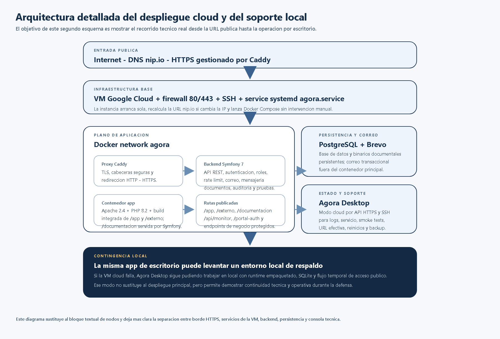

Documento de estudio
Guia personal de repaso para la defensa
Resumen tecnico y funcional del proyecto para repasar arquitectura, flujo de negocio, tecnologia, comandos, accesos y respuestas rapidas antes de la exposicion.
Guia personal de repaso para la defensa
Este documento no forma parte de la memoria formal. Lo uso como chuleta de estudio para tener claro que hace cada bloque, por que he elegido cada tecnologia y como puedo reaccionar si algo falla durante la exposicion.
1. Como explico el proyecto en treinta segundos
Mi TFG resuelve un problema real del centro: la gestion de empresas colaboradoras, convenios y practicas estaba dispersa entre correos, hojas de calculo y documentos sueltos. La solucion final es una plataforma con dos portales, una API central, documentacion publica y una app de escritorio tecnica para operar el entorno en local o en cloud.
La idea corta que quiero transmitir es esta:
- el centro necesitaba una vista unica del ciclo empresa -> convenio -> practica;
- la empresa necesitaba un canal propio, sin acceder al panel interno;
- yo he separado negocio, operacion funcional y soporte tecnico para que el sistema sea defendible.
2. Cual es la idea de arquitectura que tengo que defender
No he construido una sola aplicacion mezclando todo. He separado responsabilidades:
- un backend Symfony que concentra negocio, seguridad, correo y persistencia;
- un portal interno para coordinacion academica;
- un portal externo para empresas;
- una guia publica bajo
/documentacion; - Agora Desktop como consola tecnica separada del flujo funcional.
La idea clave que tengo que repetir es esta: un solo nucleo de negocio, varias interfaces segun el actor que entra al sistema.

Como cuento este esquema
- la VM publica recibe trafico HTTPS;
- Caddy hace de reverse proxy y expone el origen publico;
- Symfony sirve la API y tambien publica
/app,/externoy/documentacion; - PostgreSQL guarda el estado persistente en cloud;
- los documentos quedan en almacenamiento persistente fuera del contenedor;
- Agora Desktop no forma parte del flujo de negocio: es soporte tecnico.
3. Tecnologias y por que las use
Backend
- PHP 8.2: porque era una base realista para una solucion web mantenible y compatible con Symfony.
- Symfony 7: porque me da seguridad, routing, sesiones, validacion, mailer y estructura clara de API.
- Doctrine ORM: porque el proyecto vive de relaciones entre entidades y me interesaba un modelo consistente con migraciones y repositorios.
Persistencia
- SQLite en local: porque me permite demo y contingencia sin depender de un servidor externo.
- PostgreSQL 16 en cloud: porque para un despliegue publico es una base de datos mas seria, robusta y apropiada.
Frontend
- React + TypeScript + Vite: porque necesitaba dos SPA separadas, con formularios, tablas, estados y bastante interaccion. TypeScript me ayuda a evitar errores de contrato entre frontend y backend.
Cloud y despliegue
- Docker Compose: para publicar app, base de datos y proxy de forma reproducible.
- Caddy: para HTTPS automatico, redireccion y cabeceras seguras sin meter un proxy mas pesado de la cuenta.
- Google Cloud Compute Engine: porque necesitaba una VM real accesible desde fuera para que la profesora pudiera probar el sistema.
- nip.io: como solucion rapida para tener un hostname publico sin comprar dominio solo para la defensa.
Que hacen Docker y Compose en la VM
Si me preguntan esto, la respuesta correcta es:
- Docker ejecuta los contenedores.
- Docker Compose define y levanta el stack completo.
En mi despliegue cloud ese stack tiene tres servicios:
app: Symfony + Apache + frontends integrados;db: PostgreSQL;proxy: Caddy para HTTPS y publicacion externa.
La VM no depende de que yo lance todo a mano cada vez. El flujo real es:
- arranca la VM;
systemdlevantaagora.service;agora.serviceejecutadeploy/gcp/startup.sh;- ese script usa
docker compose up -d --remove-orphans; - Compose sube
app,dbyproxy.
La frase corta para defenderlo es esta:
> En cloud, Docker Compose me sirve para describir y levantar de forma reproducible la aplicacion, la base de datos y el proxy HTTPS. Docker ejecuta los contenedores y agora.service asegura que el stack arranque automaticamente cuando reinicio la VM.
Correo
- Brevo: para verificacion de empresa, rechazo, recuperacion de contrasena y avisos transaccionales.
Escritorio tecnico
- Electron: porque queria una consola tecnica unica para entorno local y cloud, con logs, pruebas, servicio remoto y contingencia si la VM falla.
Pruebas
- PHPUnit para backend.
- node:test para pruebas unitarias del frontend interno.
- Playwright para flujos E2E.
- Smoke tests para el flujo completo y para Agora Desktop.
Frase corta para defender la eleccion tecnica
No elegi tecnologias exoticas. Elegi piezas conocidas y justificables para un TFG que tenia que acabar funcionando de verdad:
- Symfony para el nucleo de negocio;
- React/TypeScript para las interfaces;
- Docker para el despliegue reproducible;
- Electron para la consola tecnica;
- PostgreSQL en cloud y SQLite en local para separar demo de contingencia y despliegue real.
4. Que hace realmente el backend
El backend es el nucleo del sistema. Lo que tengo que saber explicar es:
- autentica usuarios internos y cuentas de empresa;
- aplica permisos y separa el firewall interno del externo;
- expone la API REST del portal interno;
- mantiene el flujo empresa -> solicitud -> revision -> aprobacion/rechazo;
- crea la empresa colaboradora cuando la solicitud se aprueba;
- crea o asocia el tutor profesional propuesto;
- guarda mensajes empresa-centro;
- controla documentos, versiones, retirada y restauracion;
- gestiona asignaciones, seguimientos y evaluacion final;
- genera correo de verificacion, recuperacion y rechazo;
- sirve los frontends integrados bajo
/app,/externoy/documentacion.
Como explico el backend sin quedarme en abstracciones
- recibe la peticion;
- valida permisos y datos;
- aplica la regla de negocio;
- persiste con Doctrine;
- devuelve JSON al frontend;
- si hace falta, dispara correo o guarda auditoria.
4.1 Que archivos del codigo respaldan cada bloque
Si me piden bajar a codigo, estas son las referencias mas utiles:
- Seguridad interna y externa:
backend/config/packages/security.yaml - Login interno y sesion del portal:
backend/src/Controller/Api/AuthController.php - Login y sesion de empresa:
backend/src/Controller/PortalAuthController.php - Empresas y documentacion privada:
backend/src/Controller/Api/EmpresaColaboradoraController.php - Convenios y sus documentos:
backend/src/Controller/Api/ConvenioController.php - Estudiantes:
backend/src/Controller/Api/EstudianteController.php - Asignaciones, seguimientos y evaluacion final:
backend/src/Controller/Api/AsignacionController.php - Solicitudes de empresa:
backend/src/Controller/Api/EmpresaSolicitudController.php - Mensajeria empresa-centro:
backend/src/Controller/Api/EmpresaMensajeController.php - Portal externo autenticado:
backend/src/Controller/Api/PortalCompanyController.php - Creacion y ciclo de vida de cuentas de empresa:
backend/src/Service/PortalCompanyAccountManager.php - Almacenamiento y validacion documental:
backend/src/Service/DocumentStorageManager.phpybackend/src/Service/UploadedDocumentInspector.php - Snapshot de datos del panel interno:
backend/src/Service/BootstrapSnapshotProvider.php - Auditoria:
backend/src/Service/AuditLogger.php - Operativa local/cloud de escritorio:
desktop/main.js,desktop/preload.jsydesktop/renderer/app.js
La idea importante es que el negocio real no esta en React ni en Electron. Esta en Symfony. Los frontends consumen API y el escritorio se limita a operacion tecnica.
5. Flujos funcionales que tengo que tener claros
Flujo externo
- La empresa crea cuenta.
- Inicia sesion.
- Completa su solicitud corporativa.
- Verifica el correo.
- Consulta el estado.
- Mantiene mensajes con el centro.
- Si se aprueba, usa la misma cuenta para ver convenios, asignaciones y documentos.
Flujo interno
- Entro con perfil de coordinacion.
- Veo dashboard y KPI.
- Reviso solicitudes.
- Apruebo o rechazo.
- Si apruebo, la empresa pasa al catalogo interno y queda activa para colaborar.
- Completo la ficha de empresa con contactos, documentos y, si aplica, tutor profesional.
- Formalizo el convenio entre centro y empresa.
- La asignacion es donde vinculo estudiante, convenio, tutores, horas, fechas y modalidad.
- Sobre esa asignacion registro seguimientos, reuniones, evidencias y la evaluacion final.
- Exporto CSV si necesito evidencia.
Como explico bien el orden de negocio
Si me preguntan por el flujo interno, no debo decir que convenio, tutores, estudiante y evaluacion se hacen todos a la vez. La forma correcta de explicarlo es esta:
- primero apruebo la solicitud de empresa;
- esa aprobacion crea o activa la empresa en el dominio interno;
- despues preparo la empresa para operar, incluyendo contactos, documentos y tutor profesional;
- luego formalizo el convenio con la empresa;
- solo entonces creo la asignacion concreta de practica;
- la asignacion es la que une estudiante, empresa, convenio, tutor academico, tutor profesional, horas, fechas y modalidad;
- a partir de esa asignacion registro seguimientos;
- la evaluacion final se guarda sobre la asignacion, no como si fuera un simple seguimiento ni como una nota suelta del estudiante.

Relacion importante que tengo que recordar
EmpresaSolicitudrepresenta la entrada externa;EmpresaPortalCuentarepresenta la cuenta persistente;EmpresaColaboradorarepresenta la empresa ya aprobada dentro del dominio interno;Convenioformaliza la colaboracion;AsignacionPracticaune estudiante, empresa, convenio y tutores;Seguimientoguarda reuniones, incidencias y evidencias;EvaluacionFinalcierra la practica y cuelga de la asignacion.
Flujo tecnico
- Si la VM funciona, uso el cloud como modo principal.
- Si algo falla, abro Agora Desktop.
- Veo URL efectiva, estado de
agora.service, logs y smoke. - Si la VM no responde o la URL cambia, lo detecto ahi.
- Si el cloud cae del todo, puedo levantar el modo local como contingencia de demo.

6. Que hace cada interfaz
Portal interno
Es la herramienta de trabajo del centro. Desde aqui se:
- revisan KPI;
- gestionan solicitudes;
- administran empresas, convenios, estudiantes y tutores;
- crean asignaciones;
- registran seguimientos y evaluacion final;
- gestionan documentos;
- exportan CSV.
Portal externo
Es la puerta de entrada de la empresa. Desde aqui se:
- crea la cuenta;
- se completa la solicitud;
- se verifica el correo;
- se consulta el estado;
- se mantiene la conversacion con el centro;
- se revisan convenios, asignaciones y documentos tras la aprobacion.
Documentacion
Es un espacio publico separado del uso operativo. Sirve para:
- consultar la memoria y anexos;
- revisar capturas y esquemas;
- disponer de una guia funcional del proyecto.
Agora Desktop
Es una consola tecnica, no un portal de negocio. Sirve para:
- ver la URL cloud efectiva;
- comprobar
agora.service; - lanzar smoke tests;
- revisar logs;
- reiniciar servicios;
- operar en local si el cloud falla.
7. Comandos que debo recordar
Local desde repositorio
cd backend
composer install
php bin/console doctrine:migrations:migrate --no-interaction
start-server.batcd frontend/app
npm install
npm run build:backendcd frontend/company-portal
npm install
npm run build:backendPruebas
cd backend
php vendor/bin/phpunitcd frontend/app
npm test
npm run test:e2ecd desktop
npm run smoke:workflowCloud
La VM arranca sola por agora.service. Si hay que revisarla:
sudo systemctl status agora.service
sudo systemctl restart agora.service
sudo journalctl -u agora.service -n 100 --no-pagerSi quiero reconstruir la app cloud tras un cambio:
cd ~/TFG-Agora
git pull origin gcp-deploy-20260517
sudo docker compose --env-file deploy/gcp/.env.gcp -f deploy/gcp/docker-compose.yml up -d --buildSi necesito resetear los datos demo:
cd ~/TFG-Agora
sudo docker exec agora-app-1 sh -lc 'cd /var/www/html/backend && php bin/console app:demo:refresh --force'8. Accesos que debo tener a mano
- URL base: la URL cloud efectiva que muestre Agora Desktop. En la ultima revision valida fue
https://agora.34.175.157.37.nip.io/. - Portal interno:
/app/ - Portal externo:
/externo/ - Documentacion:
/documentacion
Credenciales:
profesora / Abrete01profesor / Abrete01admin / admin123coordinador / coordinador123
Como hablar de la URL sin pillarme los dedos
No debo vender nip.io como si fuera una URL permanente. La explicacion correcta es:
- la VM publica usa
nip.iopara no depender de un dominio comprado solo para la defensa; - si cambia la IP publica, cambia la URL;
- Agora Desktop me sirve precisamente para ver la URL efectiva correcta en cada momento.
9. Que esta cerrado y que no
Cerrado
- portal interno funcional;
- portal externo funcional;
- correo de verificacion y rechazo;
- mensajeria empresa-centro;
- documentos autenticados;
- despliegue cloud por HTTPS;
- Agora Desktop como consola tecnica principal;
- modo local de contingencia.
Futuro
- dominio propio;
- SSO institucional;
- almacenamiento documental gestionado;
- observabilidad avanzada;
- ampliar Agora Desktop con mas operativa de negocio si compensa.
10. Si me preguntan por que no he hecho mas
La respuesta correcta es que he preferido cerrar bien el nucleo del producto antes que dejar muchas funciones a medias. Lo importante del TFG no es abarcarlo todo, sino demostrar analisis, arquitectura, implementacion, validacion y criterio para recortar alcance sin romper coherencia.
La frase que mejor me sirve es esta:
> He preferido terminar bien el circuito principal de empresa, convenio, asignacion, seguimiento y evaluacion antes que ensenar muchas funcionalidades secundarias a medio cerrar.
11. Si algo falla durante la defensa
Mi orden mental es este:
- no improvisar;
- abrir Agora Desktop;
- comprobar URL efectiva y estado del servicio;
- si el cloud sigue mal, pasar al entorno local de respaldo;
- apoyar la explicacion con memoria, capturas, video y validaciones ya ejecutadas.
12. Preguntas tipicas y respuestas cortas
Por que dos portales?
Porque el centro y la empresa no tienen las mismas necesidades ni el mismo nivel de acceso. Separarlos simplifica seguridad, experiencia de usuario y flujo de negocio.
Por que la evaluacion final no va dentro de un seguimiento?
Porque la evaluacion final cierra una asignacion concreta. Los seguimientos son hitos del proceso; la evaluacion final es el cierre formal de la practica.
Por que Agora Desktop si ya existe cloud?
Porque necesito una consola tecnica para ver servicio, URL efectiva, logs, smoke y contingencia local sin depender del navegador.
Por que PostgreSQL en cloud y SQLite en local?
Porque SQLite simplifica la demo local y PostgreSQL es mas apropiado para una instancia publica persistente.
Que haria despues de la entrega?
Dominio propio, SSO, servicios gestionados para documentos y backups, observabilidad mas fuerte y endurecimiento del despliegue.